Rumah sakit 6 lantai di tanah lunak tepi sungai: dari bor tanah sampai RAB dan jadwal
Merencanakan rumah sakit tipe C 150 tempat tidur di tepi Sungai Batanghari, di atas lempung lunak, gambut, dan pasir yang mudah likuifaksi: data tanah, struktur, pondasi, model BIM, gambar kerja, RKS, RAB, dan jadwal dalam satu alur openBIM.
- Acara atau tempat
- Studi kasus perencanaan terpadu (data simulasi)
- Tahun
- 2026
- Peran saya
- Perencana tunggal; AI membantu menyusun draf yang saya telaah dan setujui (dicatat di repositori).
- Hasil
- RAB Rp 286,22 miliar, jadwal 98 minggu, 64 lembar DED, Laporan Akhir 52 halaman
- Perangkat lunak
- BIMCraft, CADCraft, IfcOpenShell, OpenSees, Blender, Python
- Jenis
- Perhitungan, Pemodelan, Gambar/DED, Kajian dan tugas kuliah
Masalah
Lahan tergenang banjir 50 tahunan, tanahnya lempung lunak dengan gambut sampai 3,7 m dan pasir yang mudah likuifaksi. Pagu owner disusun untuk 12.000 m², padahal program ruang butuh 19.328 m². Semua data bersifat simulasi dan memuat kesalahan yang harus ditemukan lebih dulu.
Yang dikerjakan
- Data tanah: menemukan tujuh kesalahan data penyedia sebelum dipakai; menetapkan parameter U1-U8, kelas situs SF, dan evaluasi likuifaksi pasir U5 (FS 0,22-0,75).
- Desain konsep: peil +12,85 dari analisis banjir yang dikoreksi, urugan bertahap dengan PVD; basement ditolak (FK blow-in 0,97-1,14 < 1,25), parkir dipindah ke gedung 4 lantai.
- Struktur atas: analisis respons spesifik situs dengan tujuh rekaman sintetis, model 3D OpenSees (kategori risiko IV, KDS D), desain pelat, balok SRPMK, kolom, dan dinding geser.
- Pondasi: 321 tiang bor Ø800 dengan gesekan negatif, serakan lateral akibat likuifaksi, dan penurunan terkalibrasi uji beban (maksimum 24,6 mm); perkuatan tebing sungai.
- BIM dan DED: model federasi IFC4 arsitektur-struktur-MEP, cek clash (1.612 turun ke 1.156 pasangan), 64 lembar DED di CADCraft, RKS 15 bab, render Blender langsung dari IFC.
- RAB: volume otomatis dari Qto IFC, AHSP rinci untuk pekerjaan utama, SMKK, dan rekayasa nilai VE-1 sampai VE-5 yang menghemat Rp 11,19 miliar.
- Jadwal: CPM 21 kegiatan, 98 minggu, Gantt dan kurva S dengan bobot dari RAB.
Hasil
| Gedung | RS tipe C 150 TT, gedung utama 6 lantai + gedung utilitas/parkir 4 lantai, 19.328 m² |
|---|---|
| Pondasi | 321 tiang bor Ø800 sedalam ±38 m, 84 pile cap |
| Dokumen | Model IFC federasi, 64 lembar DED, RKS 15 bab |
| Biaya | RAB Rp 286,22 miliar (Rp 14,81 juta/m²), volume otomatis dari model |
| Waktu | Jadwal CPM 98 minggu, mulai 3 Jan 2028 |
Gambar dan video


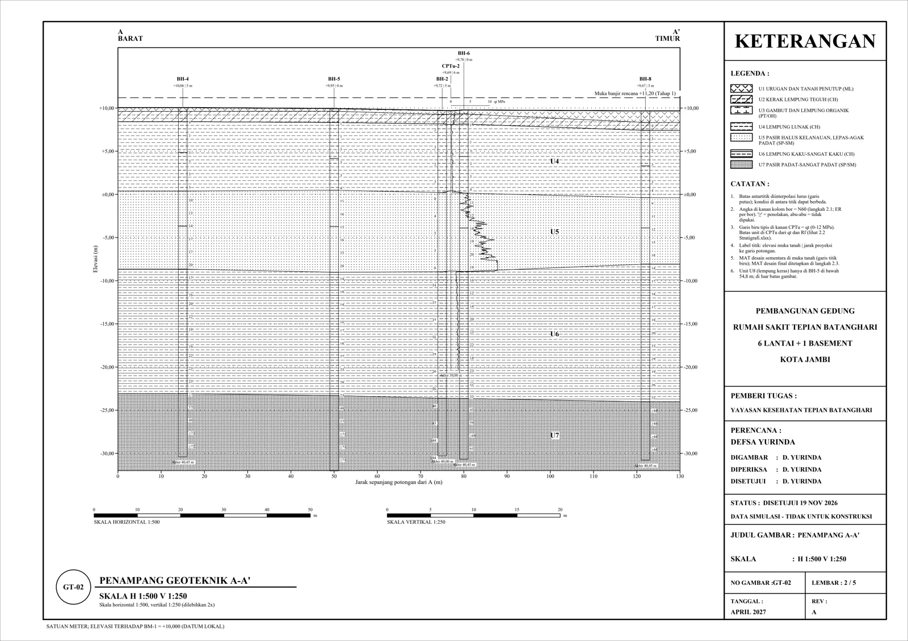

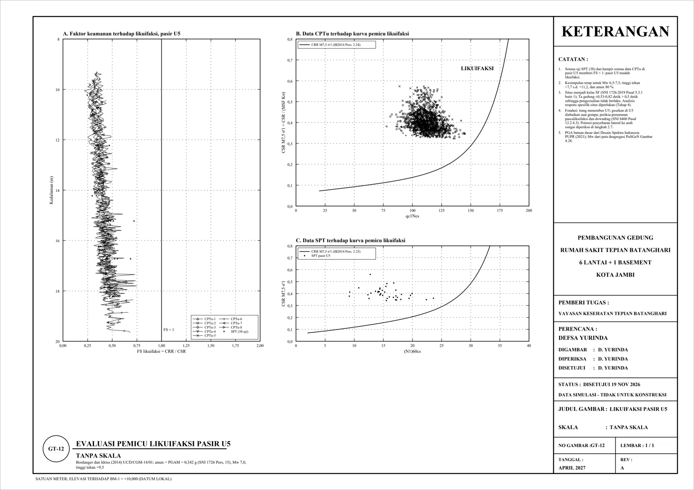

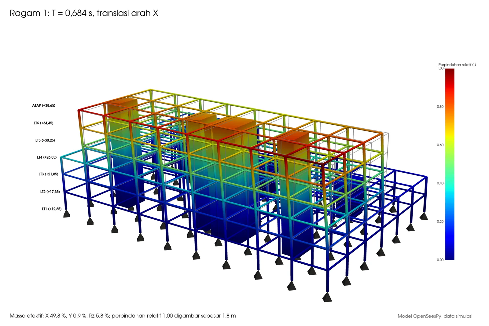

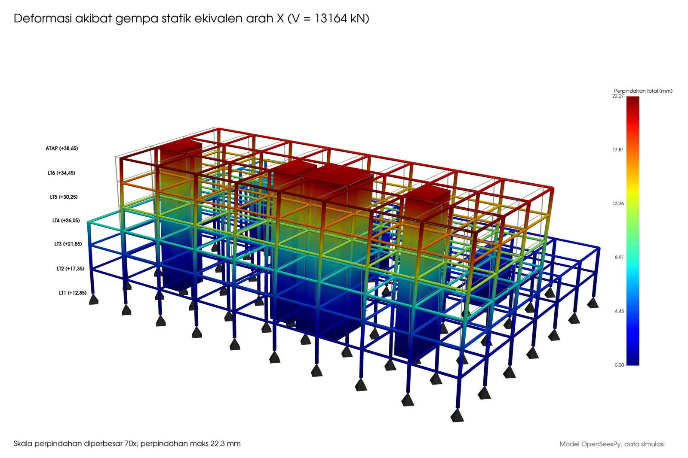

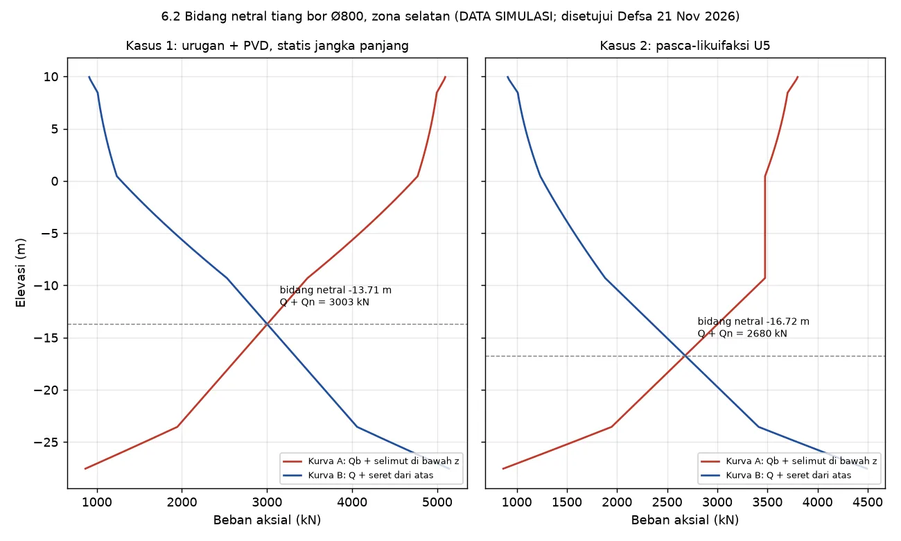

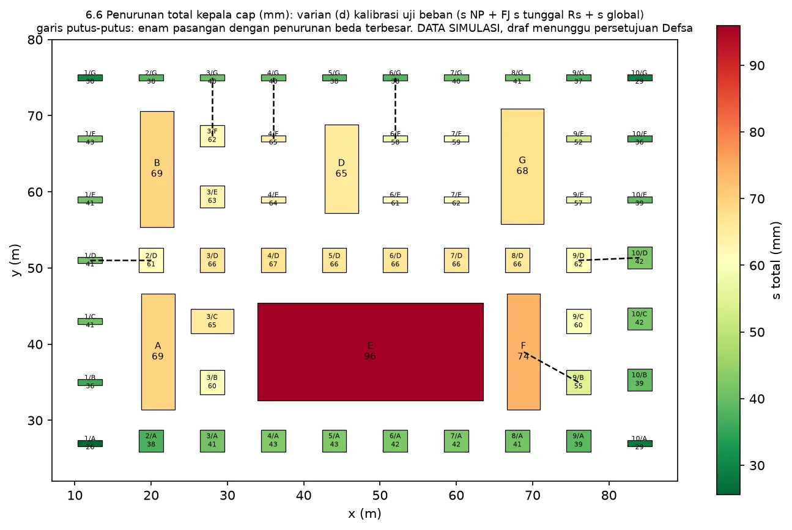

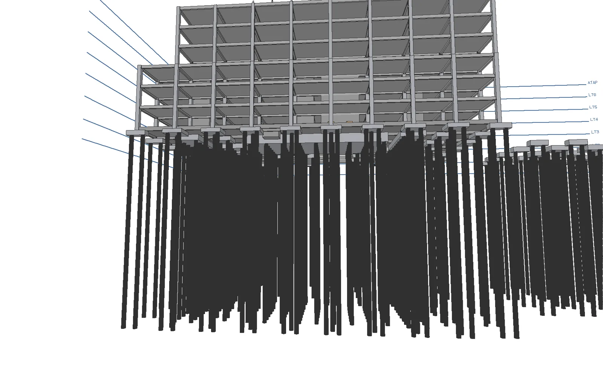

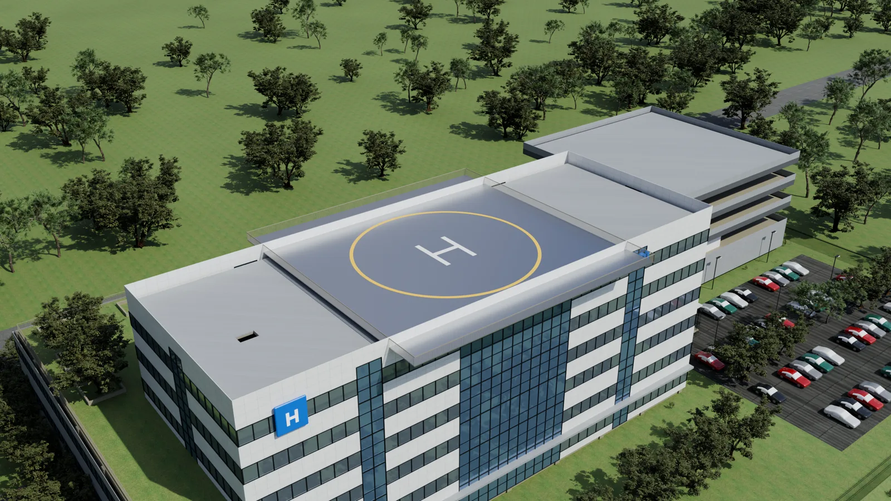

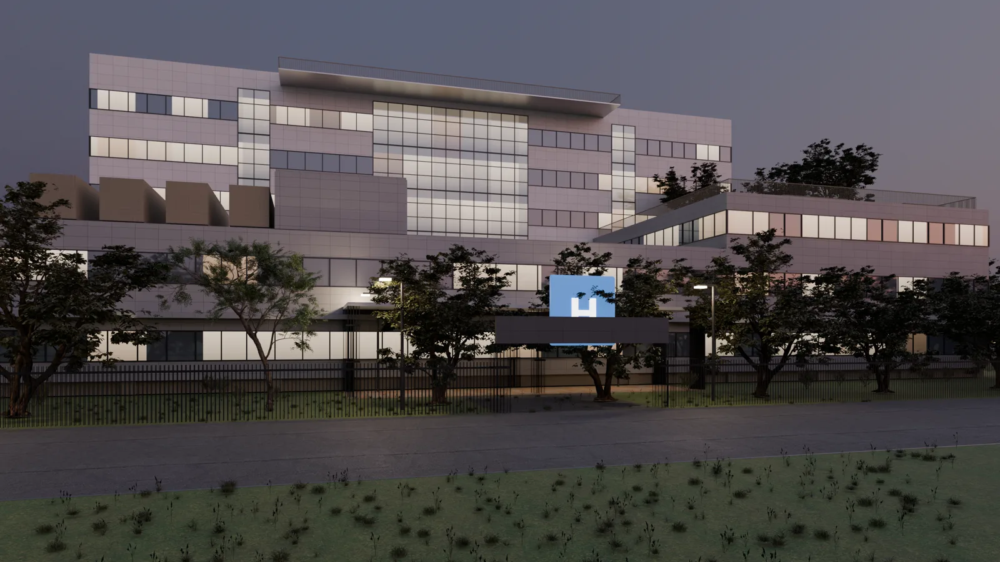

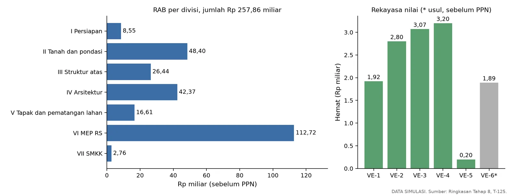

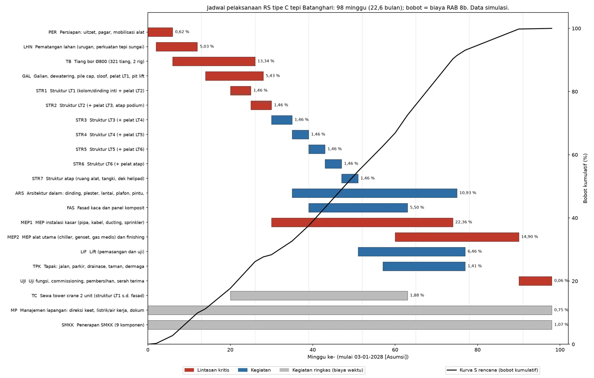
Berkas dan tautan
Laporan Akhir (PDF, 52 hlm.) Laporan Audit Akhir (PDF) Semua berkas di GitHub (DWG, Excel, IFC, RKS) Paket unduhan v1.0 (zip per kelompok)
Data simulasi untuk portofolio, bukan proyek nyata dan tidak untuk konstruksi. Setiap angka bersumber SNI/pasal atau berlabel [Asumsi]/[Literatur] dan dicek silang dua cara (T-06 sampai T-127, termasuk yang gagal beserta penjelasannya). Temuan yang mengubah desain: banjir rencana penyedia 0,65 m terlalu rendah; lapisan Vs palsu di 46-47 m pada data gempa; shaft MEP owner jatuh tepat di kolom (ketahuan dari clash); audit akhir menemukan RKS masih memakai 319 tiang dan memperbaikinya ke 321.